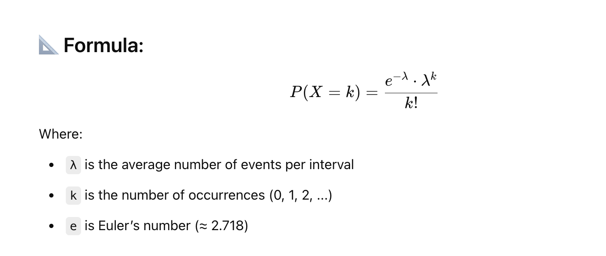
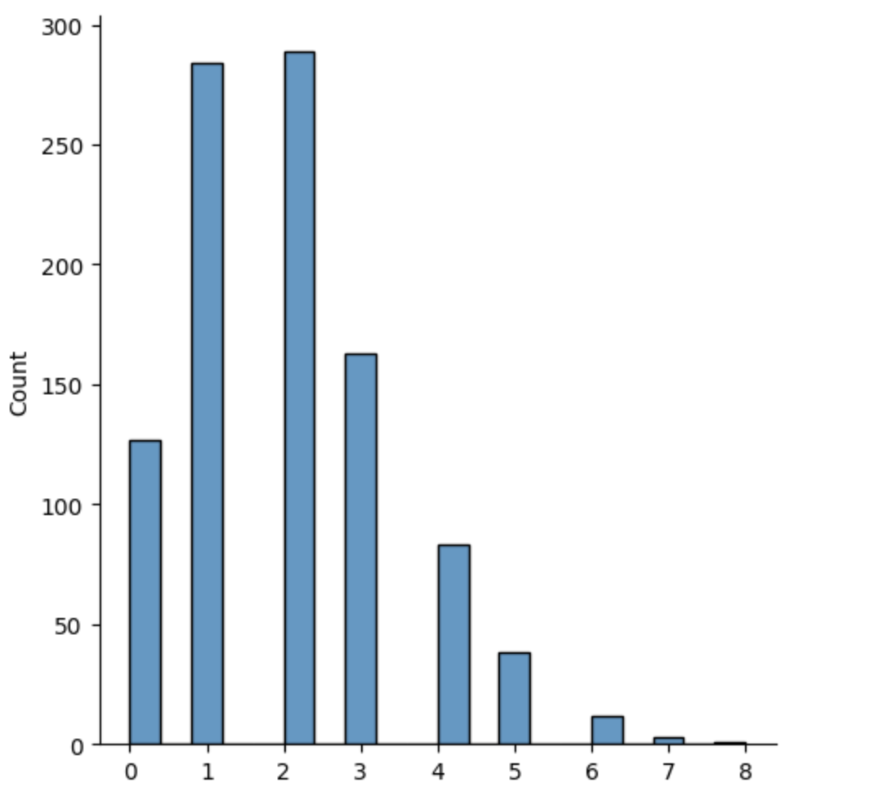
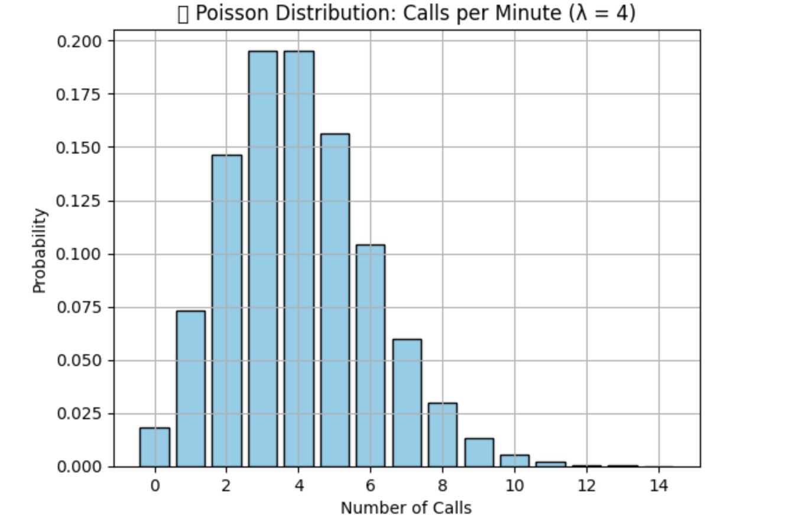

🔢 What is Poisson Distribution?#
The Poisson distribution models the number of times an event occurs in a fixed interval of time or space, given that:
- Events happen independently.
- The average rate (λ) of events is constant.
- Two events can't occur at exactly the same instant.

✅ Real-Time Use Cases of Poisson Distribution#
1. Website Traffic Modeling#
- 📊 Use: Estimate number of users visiting a site per minute
- 🎯 Goal: Predict spikes and scale infrastructure (load balancer, autoscaling)
- 🧠 ML Use: Traffic anomaly detection, feature for time-series models
2. Customer Support Tickets#
- 📞 Use: Number of support calls/emails per hour
- 🛠 Why: Helps in agent workload prediction and staff planning
- 📈 ML Use: Input feature for forecasting demand using XGBoost/Prophet
3. Bank Fraud Detection#
- 💳 Use: Track number of transactions per account in an hour/day
- ⚠️ Logic: If a user makes 100 transactions in a short period (way above λ), flag it!
- 🤖 ML Use: Anomaly detection, input to fraud scoring models
4. Industrial IoT Sensor Events#
- 🏭 Use: Number of machine faults per shift
- 🔧 Goal: Predict future maintenance needs (predictive maintenance)
- 🧠 ML Use: Poisson regression for count prediction models
5. Call Center / Telecom Networks#
- ☎️ Use: Incoming calls per second on telecom networks
- 🧠 ML Use: Train models for resource allocation or latency prediction
Visualization of Poisson Distribution#
Example
from numpy import random
import matplotlib.pyplot as plt
import seaborn as sns
sns.displot(random.poisson(lam=2, size=1000))
plt.show()

Example
import numpy as np
import matplotlib.pyplot as plt
from scipy.stats import poisson
λ = 4 # avg 4 calls per minute
x = np.arange(0, 15)
pmf = poisson.pmf(x, λ)
plt.bar(x, pmf, color="skyblue", edgecolor="black")
plt.title("📞 Poisson Distribution: Calls per Minute (λ = 4)")
plt.xlabel("Number of Calls")
plt.ylabel("Probability")
plt.grid(True)
plt.show()

Feature Description
Distribution Type Discrete (integer values)
Typical Use Cases Count-based: arrivals, failures, events
Key Parameter λ (average rate of occurrence)
In ML Anomaly detection, Poisson regression, forecasting